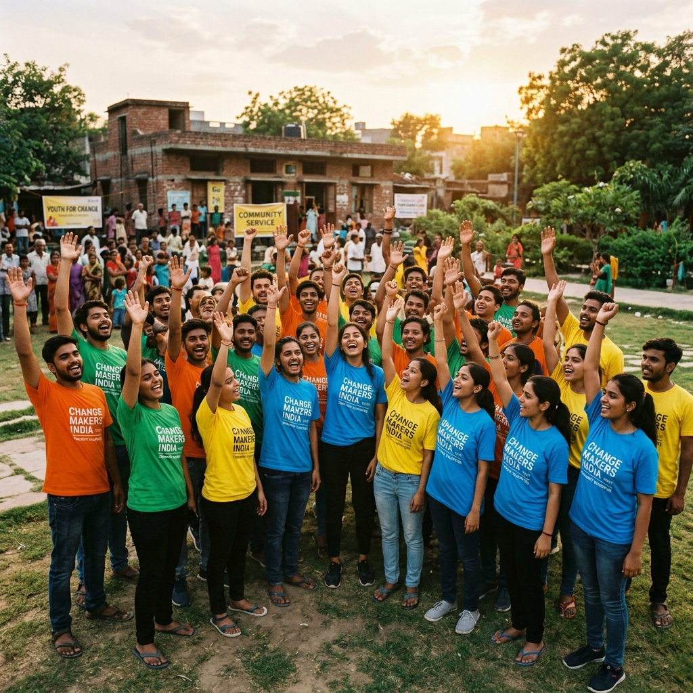
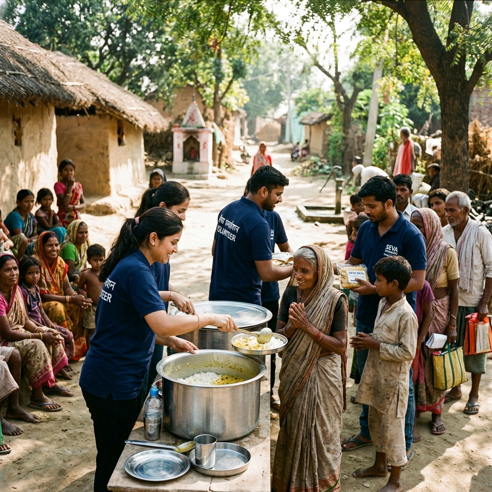
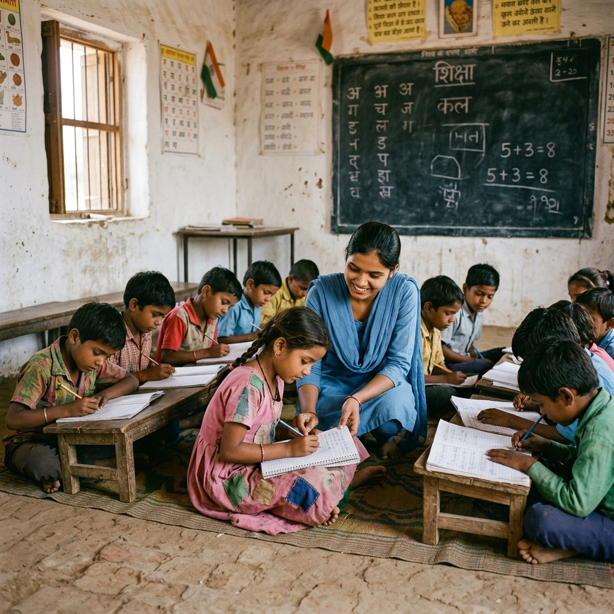
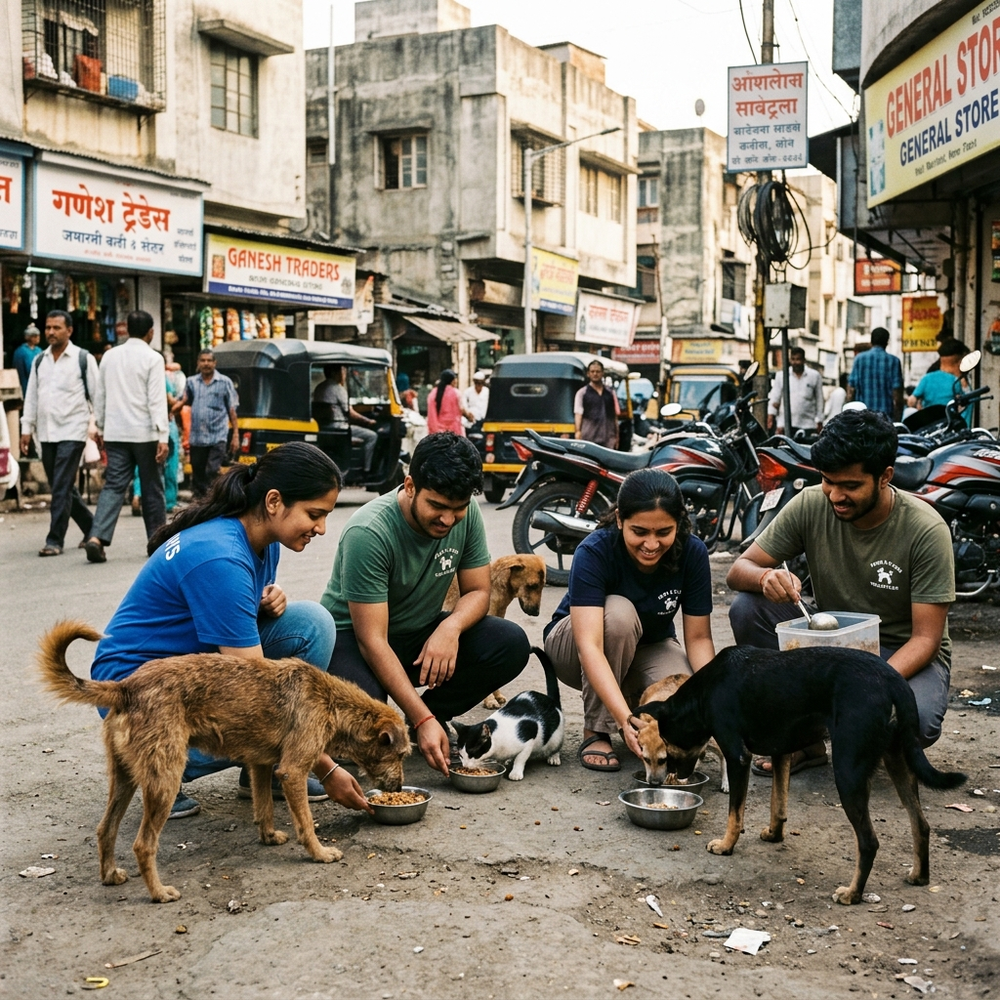
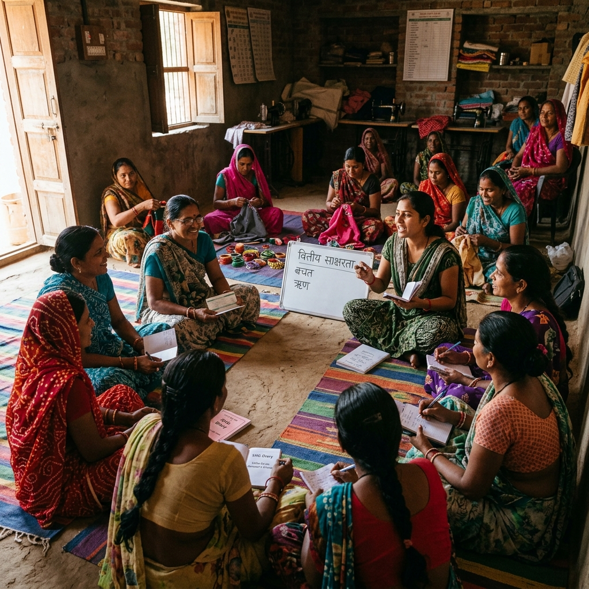
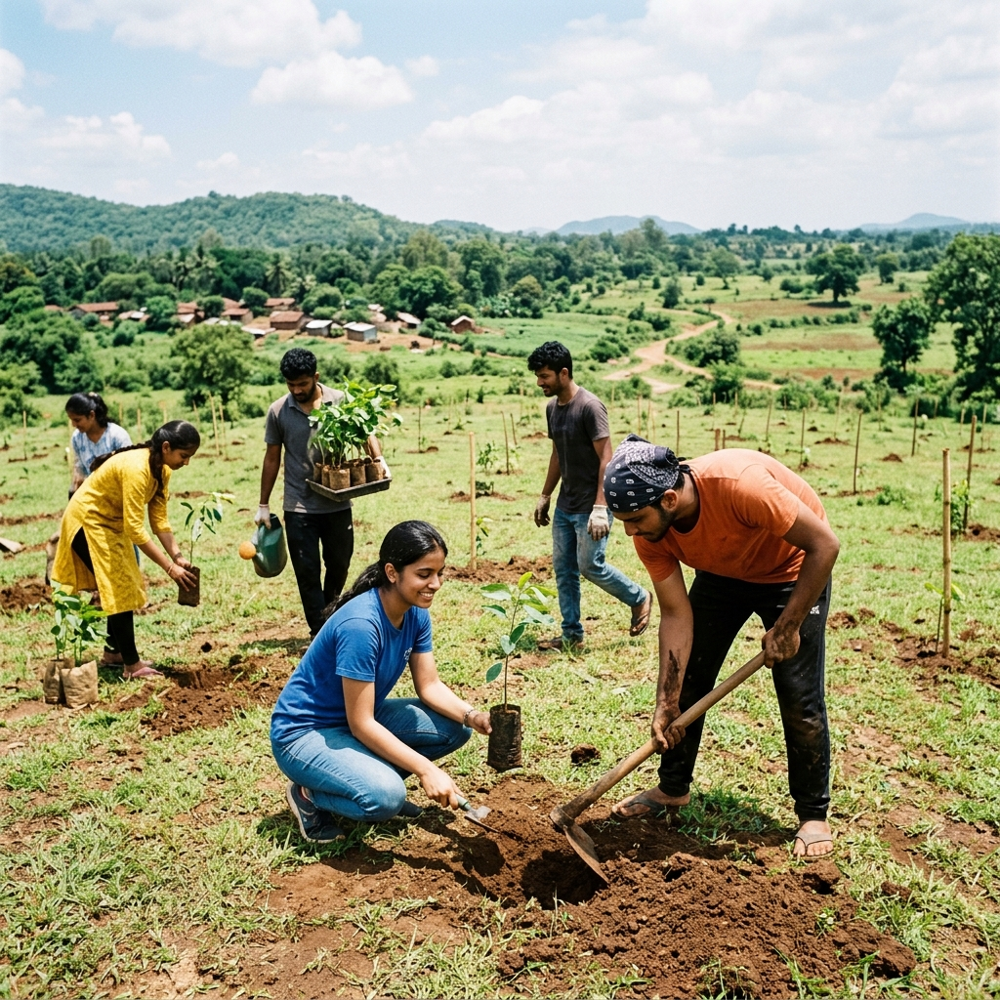

InAmigos Foundation is a registered non-profit working across India to fight hunger, educate underprivileged children, empower women, protect animals, and restore the environment — one community at a time.
Founded on 23rd September 2020 by Mr. Govind Shukla, InAmigos Foundation is a Section 8 non-profit registered under the Government of India. What started as a small group of passionate individuals in Bilaspur, Chhattisgarh has grown into a nationwide network of volunteers and changemakers.
Our name, "InAmigos," reflects our core belief — that friendship and togetherness can solve even the toughest challenges society faces. From feeding the hungry to planting trees, from teaching children to empowering women, we believe real change starts at the grassroots.
We operate with full transparency and accountability, and our work is recognized by multiple government bodies and international standards organizations.
Each project is designed to address a specific societal challenge, creating sustainable impact through community-driven action and volunteer participation.

Combating hunger and clothing shortages by distributing meals, ration kits, and essential items to underprivileged families in urban slums and rural areas across India.

Bridging the education gap for underprivileged children by providing basic digital literacy, life skills, and academic support through volunteer-run community classes.

Dedicated to the welfare of stray and abandoned animals — feeding, rescuing, and providing care to promote compassion and peaceful coexistence in our communities.

Working with rural self-help groups to promote financial independence, skill development, menstrual hygiene awareness, and career mentorship for women and young girls.

Advocating for environmental conservation through large-scale tree plantation drives, sustainability education, and promoting eco-friendly agricultural practices among farming communities.
Our flagship skill development initiative that trains young professionals in digital marketing, finance, content writing, social work, and data operations — building India's future workforce.
Every meal served, every child taught, every tree planted creates a chain reaction that transforms entire communities. Here's how our projects make a difference.
Through Project SEVA, we've served over 50,000 meals to families who otherwise go to bed hungry. Our food drives ensure no one in our reach goes without a meal on festival days, harsh winters, or during crises.
Bachpanshala gives first-generation learners access to education, digital tools, and mentors. Many of these children are now in formal schools, dreaming of careers they never thought possible.
Project JEEV has made streets safer for both animals and people. By feeding 50+ strays daily and conducting rescue operations, we foster a culture of empathy and responsible coexistence.
UDAAN has empowered over 900 women across Chhattisgarh, Haryana, and West Bengal. Through 250+ women-led microenterprises, these women are now financially independent and community leaders.
With 20,000+ saplings planted, Project PRAKRITI is actively fighting climate change at the local level. Our sustainability workshops teach farmers eco-friendly techniques that protect both livelihoods and the planet.
Project VIKAS has trained 30,000+ young professionals, equipping them with real-world skills in digital marketing, finance, and social work — directly improving their employability and career prospects.
We believe that many young people have the empathy and energy to serve society, but often lack a structured platform to turn their intentions into real impact. InAmigos was built to be that platform — to unite driven individuals and create lasting, positive societal change.
Govind Shukla
Founder, InAmigos Foundation
Whether you can give your time, your skills, or your support — there's a place for you at InAmigos. Join thousands of volunteers who are already building a kinder, more inclusive India.